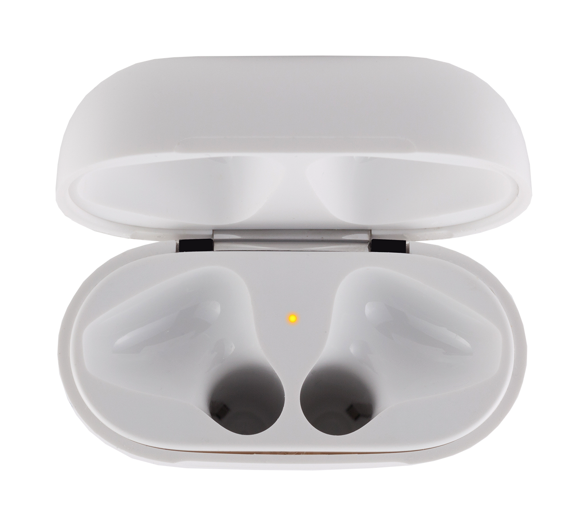

The charging case LED can be one of three colors.
Click each item in the list below to learn about the LED and what each color means. Click a revealed image for a closer look.
A flashing white light indicates AirPods are in setup mode. To manually set up AirPods with non-iCloud devices, put the charging case into setup mode by pressing and holding the setup button.
With AirPods stored inside the charging case, a green light indicates that AirPods are charged. With AirPods removed from the charging case, a green light indicates that the case is charged.
With AirPods stored inside the charging case, an amber light indicates that AirPods are charging. With AirPods removed from the charging case, an amber light indicates that the case is charging.

No light indicates that the case has no power and must be charged.
You have completed this interaction. Click the close button in the upper-right corner to continue learning about AirPods.